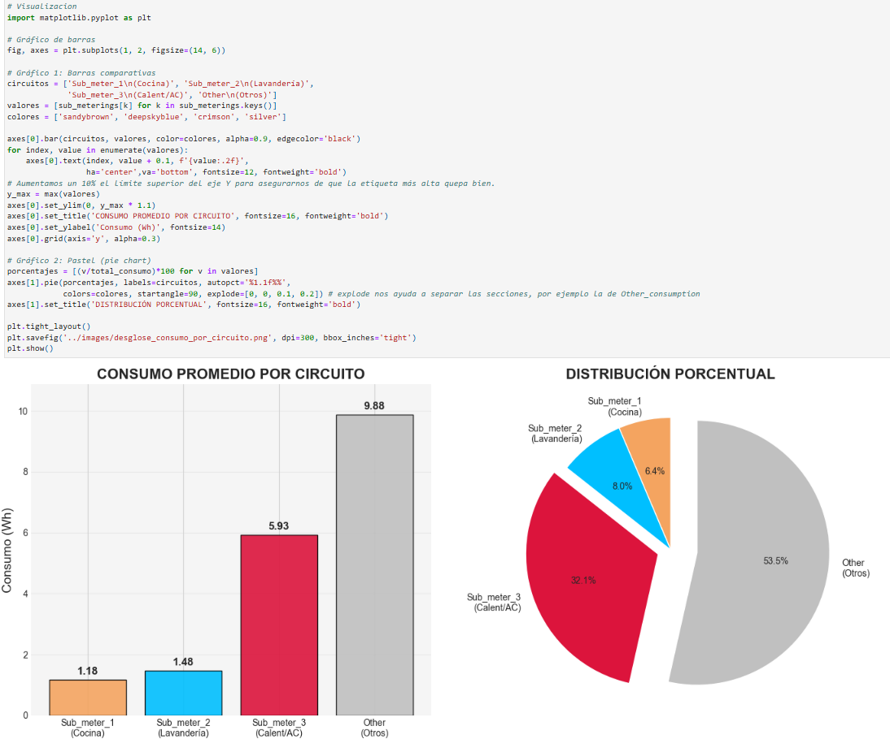
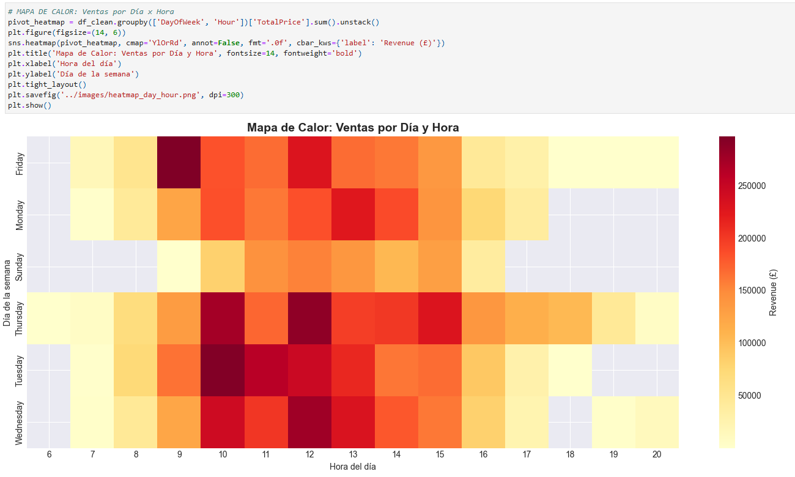
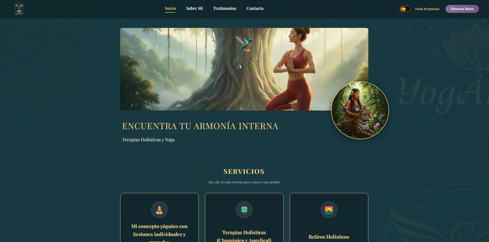

Hola, soy Andrés Aranguren
|
Ingeniero de Sistemas enfocado en Análisis de Datos y Business Intelligence. Desarrollo proyectos con SQL, Python, Power BI y Excel para convertir datos en insights que apoyan la toma de decisiones.

Ingeniero de Sistemas enfocado en Análisis de Datos y Business Intelligence. Desarrollo proyectos con SQL, Python, Power BI y Excel para convertir datos en insights que apoyan la toma de decisiones.
Algunos de mis proyectos de análisis de datos y desarrollo

Análisis exploratorio de patrones de consumo energético utilizando Python. Identificación de patrones de consumo energético y variables de mayor impacto, con conclusiones orientadas a optimización del consumo.

Dashboard interactivo en Power BI para análisis de 50,000+ transacciones. KPIs de conversión, ticket promedio y productos estratégicos. El objetivo principal es comprender el comportamiento del mercado, identificar patrones de compra.

Desarrollo de sitio web informativo para proyecto de tesis, orientado al análisis de datos sobre infraestructura verde urbana. Incluye procesamiento de información cuantitativa, visualización de indicadores y apoyo a la toma de decisiones en sostenibilidad.

Sitio web estático desarrollado para YogAmarte, un espacio de bienestar, enfocado en la prestación de servicios de yoga, terapias chamánicas, angelicales y retiros holísticos
Soy un profesional orientado al análisis de datos con sólida formación en Business Intelligence. Mi experiencia incluye limpieza, transformación y visualización de datos para apoyar la toma de decisiones estratégicas.
He trabajado con SAP Business One y desarrollado proyectos personales de análisis utilizando Python, SQL y Power BI. Actualmente curso un Máster en Big Data y Business Intelligence, ampliando constantemente mis conocimientos en el campo de los datos.
Consultas complejas, JOIN, subconsultas
pandas, numpy, matplotlib, seaborn
Dashboards, DAX, Power Query
Tablas dinámicas, Power Query
Control de versiones
Consultas y reportes
Desarrollo de proyectos con Python, SQL y Power BI
Heinsohn Business Technology
Heinsohn Business Technology
Escuela de Negocios Europea de Barcelona (ENEB)
Universidad de Bogotá Jorge Tadeo Lozano
¿Interesado en trabajar juntos? ¡Contáctame!
Bogotá, Colombia